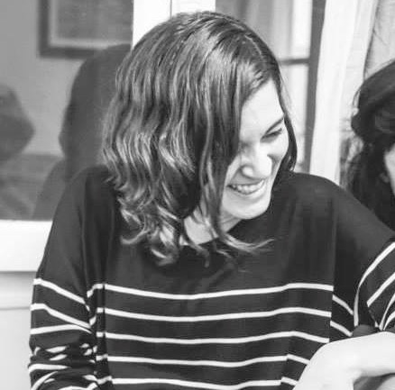

About Paula
I grew up as the oldest sister of a large and loving family in New Jersey. After high school, I left my small hometown for city life and a college career at the Massachusetts Institute of Technology. Those four years were among the best of my life; I met some of my closest friends and learned immensely from my professors and peers. I graduated from MIT in 2014 with studies in Civil & Environmental Engineering, Policy, and Urban Planning.
After graduation, I spent about a year as a research intern at Air Liquide's i-Lab in Paris, France. Living in Paris was an enlightening experience, especially as a lover of French culture and the urban lifestyle. I'm a passionate believer in the power of both cities and private enterprise to catalyze positive change, so having a chance to explore these ideas in Paris was the best way to start my professional career.
I'm now working at LOVELAND Technologies as a Venture for America fellow. My position as a "Parcel Pusher" (aka Business Development Manager) allows me to flex my organizational muscles and implement strategies and processes for growing our business. Not only am I helping spread the word about a product that I believe in, but I'm helping our mission-based organization succeed further in its goal to bring public information to the masses.